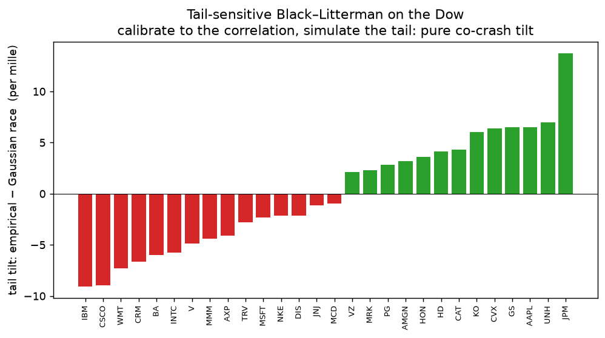

Tail-sensitive Black–Litterman
A crash-proofing overlay for any portfolio.
Black–Litterman lets you tilt a benchmark by a view on returns. But the view you often want before a crash is on co-movement: these names crash together more than their correlation implies. That is a tail view, and a covariance cannot encode it. Here is an overlay that expresses it — calibrate to the correlation, simulate the tail, and shade the names whose tail dependence exceeds their correlation.
The Dow crashes together far more than a Gaussian allows
Daily returns of 28 Dow constituents, 2010–2024. How often does the whole
index fall by more than q on the same day, empirically versus under a
Gaussian fit to the same mean and covariance?
| all names down by > q | empirical | Gaussian fit | ratio |
|---|---|---|---|
| > 1.0% | 0.318% | 0.083% | 4× |
| > 1.5% | 0.212% | 0.012% | 18× |
| > 2.0% | 0.106% | 0.001% | 96× |
The joint crash is invisible to a covariance — it lives in the lower-tail copula. A second moment averages across states and cannot see that, in a crash, many names behave as one.
The recipe
- Take the empirical data — the realised return vectors (bootstrap if you like).
- Fit assuming its correlation — calibrate latent abilities so a Gaussian race with the empirical correlation reproduces your benchmark. This prices the second-moment structure into the anchor (a fast, exact, inversion-free ability inverse).
- Simulate to capture the tail — run the forward race under the empirical simulation (resampled real return vectors: same correlation, real fat joint tail). Read off the tilted weights.
Because the reference and the tilt share the empirical correlation, the tilt isolates the pure tail residual — the joint-crash structure beyond second moments. It is reverse optimization with a tail view: Black–Litterman’s confidence dial over co-crash co-movement, driven by the empirical simulation directly, benchmark-anchored and never inverting a covariance.
What it does to an equal-weight Dow

Starting from equal weight, the overlay shades the names with more tail dependence than their correlation implies — IBM, CSCO, WMT, CRM, BA crash with the field beyond what covariance sees — and lifts those with less — JPM, UNH, AAPL, GS. The benchmark is reproduced exactly under the correlation; only the tail moves the weights.
Use it on any portfolio
Feed your current weights as the benchmark. The overlay returns them unchanged in calm co-movement and shades the excess-tail-dependent names as your confidence in the tail view rises — a smooth, inversion-free crash-proofing tilt that a return-view Black–Litterman cannot express and a covariance cannot see.
Reproducible: experiments/tail_black_litterman.py in the
allocation repo. The construction
and its theory are in the Thurstone Portfolios paper.